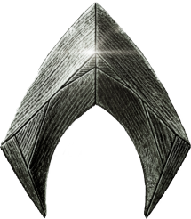

Niki Piskorczyk
1.Semester
I henhold til Inspiration, baserer meget af det som jeg arbejder med i henhold til Musik, og andre forskellige kunstnere. Det som jeg har mest interesse i.
Dans Dans Dans
I dans Dans Dans projektet, arbejde jeg ud fra i henhold til at lave målgruppeanalyser og til mobile first! Klik her for at se videre.
Det her projekt skulle vi lave en hjemmeside til både mobile og desktop, hvor vi tog i brug af Content Plans og sociale medier. 
Video 1.4 I det her projekt, arbejdede jeg 2 og 2 sammen med en makker, hvor vi lavede en selv-portræt i